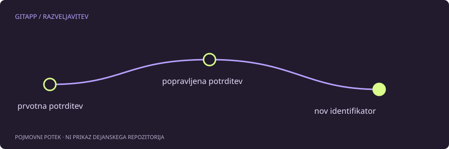

Majhen popravek, nova potrditev
Tipkarska napaka v zadnjem sporočilu je dober primer za razumevanje git commit --amend. Ukaz ne preimenuje nespremenljive stare potrditve. Ustvari novo potrditev, ki nadomesti položaj zadnje potrditve na trenutni veji, in zato dobi nov identifikator.
Pred uporabo preveri, da si na pravi veji in da res popravljaš zadnjo potrditev. Če je predmet popravka starejši zapis, je postopek drugačen in lahko prepiše več zgodovine. Ta vodič obravnava samo zadnjo, običajno lokalno potrditev.
Preglej indeks, ne samo delovne datoteke
Najprej uporabi:
git status
git diff --cached
git log -1 --format=fullerPomembno je, da se vsebina, ki je trenutno pripravljena, ob običajni uporabi --amend lahko vključi v nadomestno potrditev. Če želiš spremeniti samo sporočilo, moraš vedeti, kaj je v indeksu. Gumb v urejevalniku z napisom za popravljanje potrditve ima lahko enako posledico kot ukazna vrstica.
Primer v ločenem učnem repozitoriju
Ko je indeks preverjeno brez dodatnih sprememb in je zadnja potrditev samo lokalna, lahko sporočilo popraviš takole:
git commit --amend -m "Jasnejši opis spremembe"Po ukazu preglej zadnjo potrditev in njene datoteke. Pričakovana sprememba je novo sporočilo ter nov identifikator, ne nenamerna nova različica drugih datotek. Če so bile v indeksu dodatne spremembe, se najprej odloči, ali jih želiš vključiti ali obdržati za poznejšo ločeno potrditev.
Kaj če si že poslal na strežnik?
Objavljena potrditev je lahko osnova za delo drugih ljudi. Njeno nadomeščanje lahko povzroči razhajanje lokalne in oddaljene zgodovine. Običajno pošiljanje je lahko zavrnjeno, vendar to ni razlog za samodejen prehod na prisilno pošiljanje.
Pri skupni veji se dogovori z ekipo ali sprejmi, da bo manjša tipkarska napaka ostala. Cena urejenega besedila ni vedno vredna prepisovanja sodelavčeve osnove. Vsebinski popravek lahko pogosto zabeležiš kot novo, običajno potrditev.
Ne zamenjuj avtorstva in sporočila
Popravljanje sporočila ni isto kot popravljanje avtorja, časa ali podpisovanja. Ti podatki imajo ločene pomene in možnosti. Ne spreminjaj jih zgolj zato, da bi zgodovina delovala drugače, kot se je delo dejansko zgodilo.
Pri poročanju o težavi ne objavljaj celotnega izpisa z zasebnimi e-poštnimi naslovi. Zadošča pojasnilo, ali je potrditev lokalna, ali je indeks čist in kaj želiš spremeniti. To so podatki, ki določajo naslednji korak.
Vir in obseg
Referenca: uradni priročnik za git-commit. Primeri so pripravljeni za učenje in niso opis posega v dejanski projekt. Preberi način preverjanja.